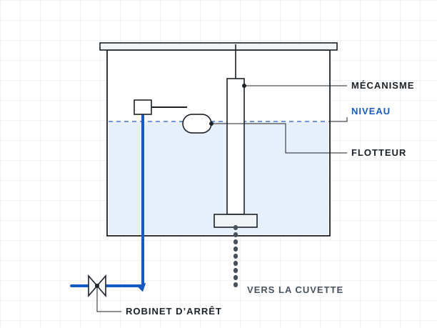

Dépannage et fuites
Une fuite ne s’arrange jamais toute seule. On en trouve l’origine, on répare durablement et on vérifie que tout est sec avant de partir.
Ce qu’on fait
- Recherche de fuite apparente
- Joints, flexibles et robinets remplacés
- Mécanisme de chasse d’eau
- Évier, lavabo ou douche débouchés
Bon à savoir
- En attendant, coupez l’eau à la vanne générale
- Une photo du problème aide à préparer le passage
- Un dégât des eaux se déclare à votre assureur